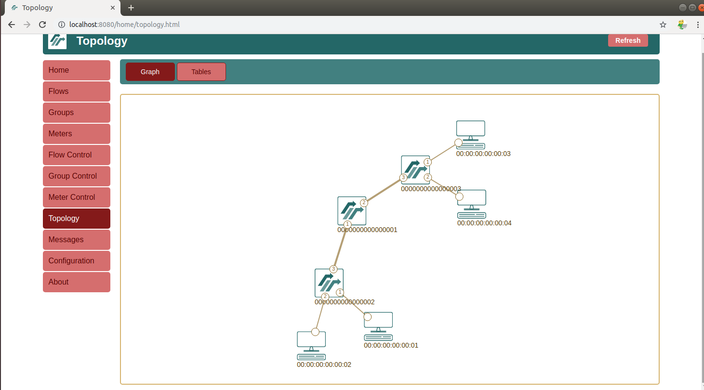
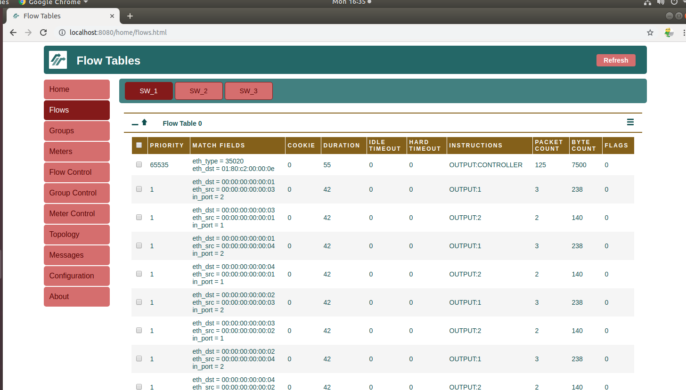
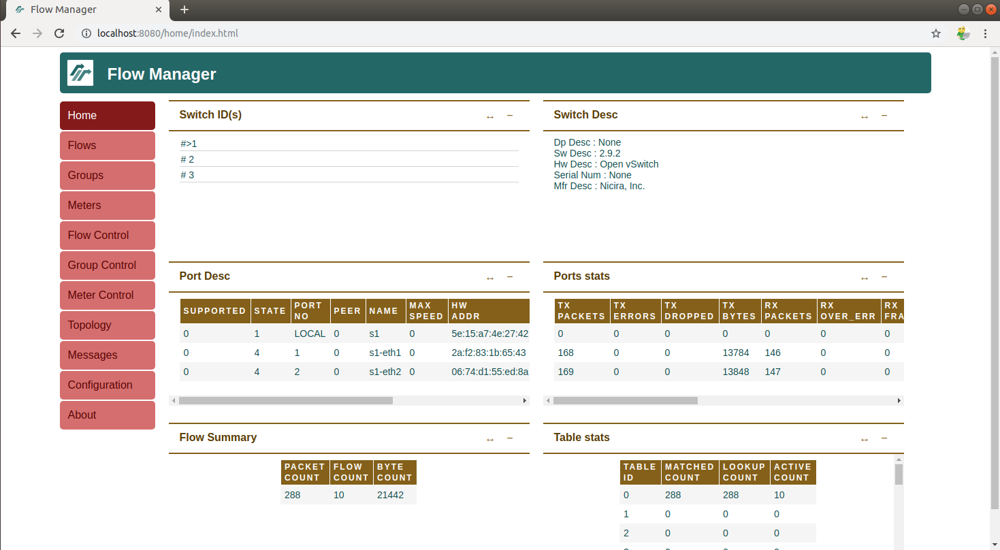
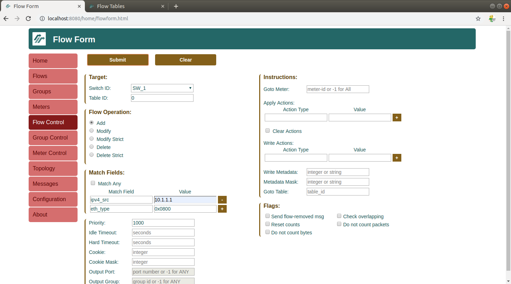
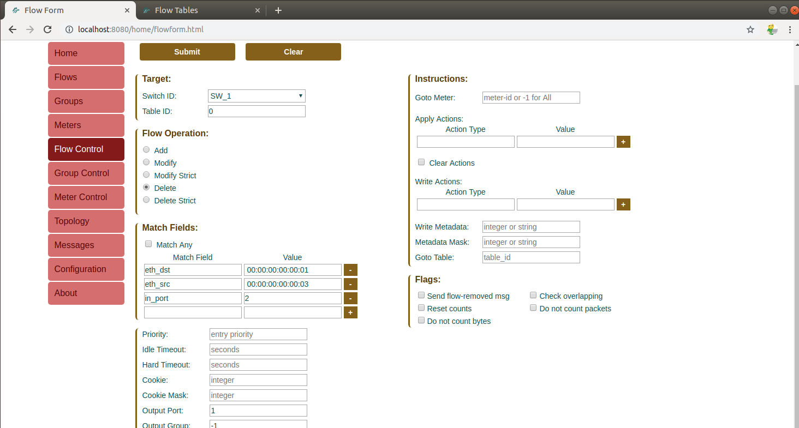

Version: 1.0.1
KNET Solutions (Online Training Centre),
Phone/WhatsApp: +919445042007
we provide Academic SDN Project assistance/guidance.
Flow Manager Application1. Introduction2. Installation3. Quick DemoDemo4. Flow OperationsAdd a flowDelete a Flow with exact matchDelete flows with only output port numberDelete all flows5. Further experiments6. References
https://github.com/martimy/flowmanager The FlowManager is a RYU controller application that gives the user manual control over the flow tables in an OpenFlow network. The user can create, modify, or delete flows directly from the application. The user can also monitor the OpenFlow switches and view statistics.
Flowmanager doesnot have inbuilt switching application. So, if user want switching operations(reactive switching), run switching application(simple switch, l3, l4 switch, .. etc) along with flowmanger.
Just clone or download the flowmanger application from github.
git clone https://github.com/martimy/flowmanager
ryu-manager --observe-links ~/flowmanager/flowmanager.py ryu.app.simple_switch_13
sudo mn --controller=remote,ip=127.0.0.1 --mac -i 10.1.1.0/24 --topo=tree,depth=2,fanout=2
mininet>pingall



Flow control tab provides the Add, Modify , Delete Flow operations.
Lets add a flow S1 to drop all packets generated by 10.1.1.1 host.
Select Add Operation -Select Match ipv4_src 10.1.1.1 eth_type 0x0800

Now check the flows.

Now check the flows.
Select the Delete operation
Table Miss entry also will be removed. So , we need to destroy the topology and start again to continue the exercieses.
https://martimy.github.io/flowmanager/ http://adhocnode.com/building-openflow-lab/